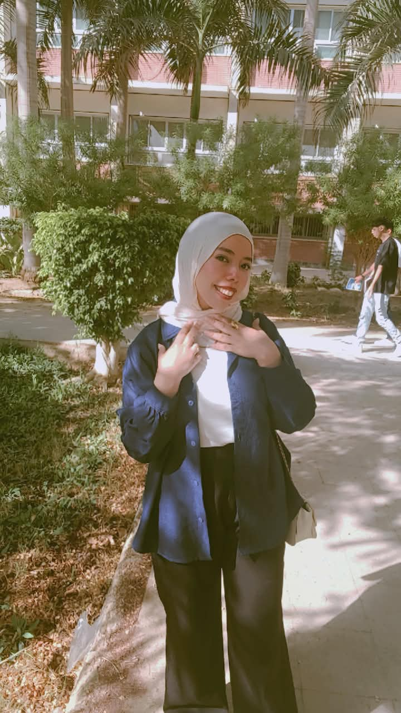
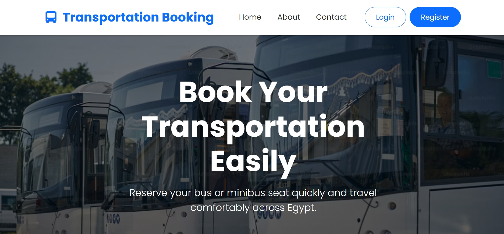
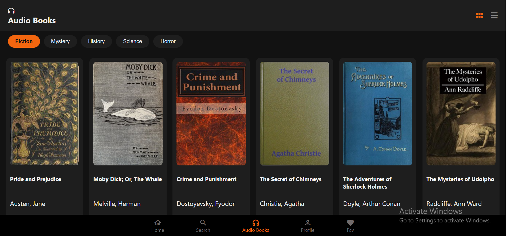
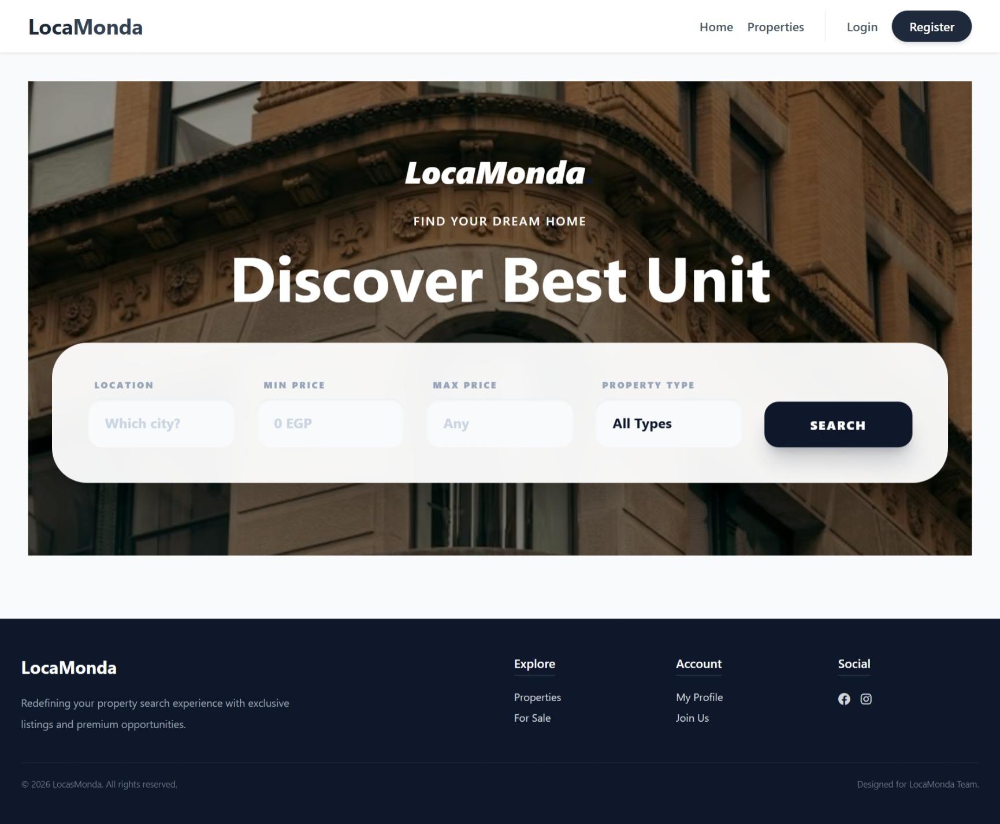

Programming
Languages I’ve studied and practiced in different projects.
COMPUTER SCIENCE · WEB DEVELOPMENT
Aspiring .NET Backend Developer
I enjoy turning ideas into practical web applications, working with databases, and solving problems through clean, structured code.

01 / A LITTLE ABOUT ME
I’m a Computer Science undergraduate at Assiut University with a growing passion for backend development and useful web applications.
My journey has introduced me to programming, databases, and web development through university, practical training, and personal projects. I enjoy understanding how applications work behind the scenes, designing database structures, implementing application logic, and solving problems step by step.
I’ve worked with PHP and MySQL on a transportation booking system, and I’m continuing to develop my skills in C#, .NET, and ASP.NET Core through structured training and hands-on practice.
My goal is to keep growing as a developer while creating reliable, practical, and user-friendly software.
More about working together02 / MY TOOLKIT
A growing toolkit built through coursework, training, and hands-on projects.
Languages I’ve studied and practiced in different projects.
Building responsive interfaces and learning application frameworks.
Working with relational data, queries, and application integration.
Tools and foundations that support my development workflow.
03 / SELECTED WORK
A selection of academic, training, and collaborative projects. Each one taught me something new.

PHP / MYSQL ↗A web-based booking project developed during practical PHP training. Features include user authentication, trip browsing, booking management, session handling, and database operations.
View repository$ ./lsh
Welcome to LSH
$ help
cd pwd echo history
env help exit
$
A C command-line shell exploring built-in commands, command parsing, process management, and operating-system concepts.
View repositoryA Python project using Breadth-First Search to calculate shortest-path distances on a grid and support route-optimization experiments.
View repository
↗A library website project. My contribution focused on the audiobook page and search functionality within the frontend.
View repository
↗A collaborative property-related web project. My contribution included selected Home, Index, and Booking views, along with specific controller and price-filter changes.
View repositoryProject visuals are custom CSS illustrations for this portfolio, not screenshots of the live applications.
04 / THE JOURNEY SO FAR
CURRENT TRAINING
Practical training focused on C#, .NET, ASP.NET Core, SQL, and web application development, while strengthening backend and full-stack skills.
120 HOURS
Practical training in PHP, MySQL, HTML, CSS, and JavaScript, including work on a transportation booking system with database integration and session-based functionality.
UNDERGRADUATE EDUCATION
Currently studying at the Faculty of Computers and Information, building foundations in programming, algorithms, databases, and computer science.
05 / HOW I CAN HELP
From presenting your work clearly to building and improving web experiences, let’s find the right fit for your project.
Clean, professional, ATS-friendly resume formatting that presents your skills and experience clearly.
Discuss this service ↗Personalized, responsive portfolio websites to showcase your projects, skills, and professional identity.
Discuss this service ↗Responsive web interfaces using HTML, CSS, and JavaScript, with care for usability and visual consistency.
Discuss this service ↗Help troubleshooting interface issues, application logic, and SQL-related problems within my technical scope.
Discuss this service ↗Suitable web application features using PHP or C#/.NET, including CRUD, validation, authentication, and database integration.
Discuss this service ↗Relational database structures, table relationships, SQL queries, and integration with web application features.
Discuss this service ↗06 / KEEPING CURIOUS
A few learning milestones that support my growing technical foundation.
National Telecommunication Institute (NTI) · 120 hours · 2026
HackerRank · 2026
ITI Mahara-Tech · 2025
ITI Mahara-Tech · 2025
ITI Mahara-Tech · 2025
DEPI · Ongoing training · 2026–Present
Certificate links can be added after each document has been checked and prepared for sharing.
07 / BEYOND CODE
Native
Intermediate
08 / YOUR TURN
Have a project in mind, need help with your portfolio, or want to discuss a web development opportunity? I’d be happy to hear from you.
Email me